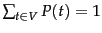
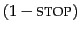
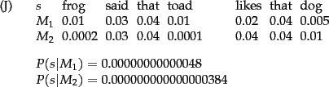

Next:
Types of language models
Up:
Language models
Previous:
Language models
Contents
Index
What do we mean by a document model generating a query? A traditional generative model of a language, of the kind familiar from formal language theory, can be used either to recognize or to generate strings. For example, the finite automaton shown in Figure 12.1 can generate strings that include the examples shown. The full set of strings that can be generated is called the language of the automaton.![[*]](http://nlp.stanford.edu/IR-book/html/icons/footnote.png)
If instead each node has a probability distribution over generating different terms, we have a language model. The notion of a language model is inherently probabilistic. A language model is a function that puts a probability measure over strings drawn from some vocabulary. That is, for a language model  over an alphabet
over an alphabet  :
:
One simple kind of language model is equivalent to a probabilistic finite automaton consisting of just a single node with a single probability distribution over producing different terms, so that
, as shown in Figure
12.2 . After generating each word, we decide whether to stop or to loop around and then produce another word, and so the model also requires a probability of stopping in the finishing state. Such a model places a probability distribution over any sequence of words. By construction, it also provides a model for generating text according to its distribution.
Worked example. To find the probability of a word sequence, we just multiply the probabilities which the model gives to each word in the sequence, together with the probability of continuing or stopping after producing each word. For example,
As you can see, the probability of a particular string/document, is usually a very small number! Here we stopped after generating
frog the second time. The first line of numbers are the term emission probabilities, and the second line gives the probability of continuing or stopping after generating each word. An explicit stop probability is needed for a finite automaton to be a well-formed language model according to Equation
90. Nevertheless, most of the time, we will omit to include
STOP and
 probabilities (as do most other authors). To compare two models for a data set, we can calculate their
likelihood ratio , which results from simply dividing the probability of the data according to one model by the probability of the data according to the other model. Providing that the stop probability is fixed, its inclusion will not alter the likelihood ratio that results from comparing the likelihood of two language models generating a string. Hence, it will not alter the ranking of documents.
Nevertheless, formally, the numbers will no longer truly be probabilities, but only proportional to probabilities. See Exercise
12.1.3 .
End worked example.
Figure 12.3: Partial specification of two unigram language models.
 |
Worked example. Suppose, now, that we have two language models  and
and  , shown partially in Figure 12.3 . Each gives a probability estimate to a sequence of terms, as already illustrated in m1probability. The language model that gives the higher probability to the sequence of terms is more likely to have generated the term sequence. This time, we will omit STOP probabilities from our calculations. For the sequence shown, we get:
, shown partially in Figure 12.3 . Each gives a probability estimate to a sequence of terms, as already illustrated in m1probability. The language model that gives the higher probability to the sequence of terms is more likely to have generated the term sequence. This time, we will omit STOP probabilities from our calculations. For the sequence shown, we get:

and we see that
 . We present the formulas here in terms of products of probabilities, but, as is common in probabilistic applications, in practice it is usually best to work with sums of log probabilities (cf. page 13.2 ). End worked example.
. We present the formulas here in terms of products of probabilities, but, as is common in probabilistic applications, in practice it is usually best to work with sums of log probabilities (cf. page 13.2 ). End worked example.
Next:
Types of language models
Up:
Language models
Previous:
Language models
Contents
Index
© 2008 Cambridge University Press
This is an automatically generated page. In case of formatting errors you may want to look at the PDF edition of the book.
2009-04-07